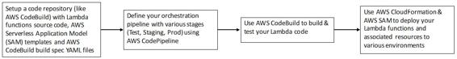

CI/CD for serverless applications
The process to manage the CI/CD pipelines is very similar to the process described in the previous section around managing application environments in Amazon EC2. The main steps involved for automating this process for a serverless application are as follows:
